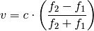
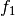

Doppler¶
Doppler shift module.
- acoustics.doppler.velocity_from_doppler_shift(c, f1, f2)[source]¶
Calculate velocity based on measured frequency shifts due to Doppler shift. The assumption is made that the velocity is constant between the observation times.

Parameters: - c – Speed of sound
 .
. - f1 – Lower frequency .
- f2 – Upper frequency
 .
.
- c – Speed of sound